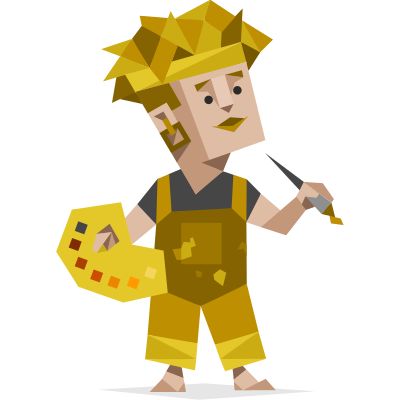
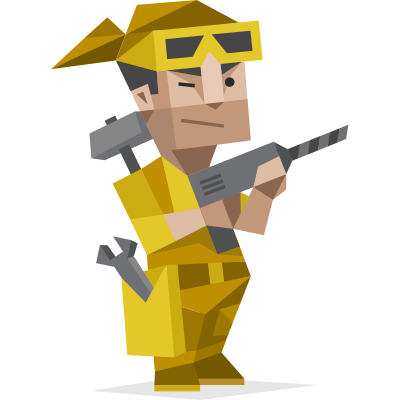

Classes dos MBTI
Analistas
Classficados como criativos, os sentinelas também são, estratégicos, criadores, com uma sede insaciável por conhecimento, são líderes ousados, que sempre dão um jeito para tudo. São pensadores espertos e curiosos.
Diplomatas
Os diplomatas são considerados quietos e místicos, porém muito inspiradores e incansáveis, São pessoas poéticas, bondosas e altruístas, sempre prontas para uma boa causa, líderes inspiradores e carismáticos que conseguem hipnotizar sua audiência, são sociáveis, entusiamáticos, sempre encontrando razões para sorrir.

Sentinelas
Procura por praticidade, então procura por um sentinela, são indivíduos práticos e extremamente confiáveis, protetores dedicados e acolhedores, estão sempre prontos para defender seus amados. São excelentes administradores, inigualáveis em gerenciar coisas ou pessoas, são pessoas extraordinariamente atenciosas, sociais e populares, sempre prontas para ajudar.
Exploradores
Práticos e ousados, mestres em todas as ferramentas, eles são artistas flexíveis e charmosos, sempre prontos para explorar e experimentar algo novo. São pessoas enérgicas e perceptivas, que realmente gostam de arriscar, animadores entusiasmados, espontâneos, a vida nunca fica entediante perto deles.



